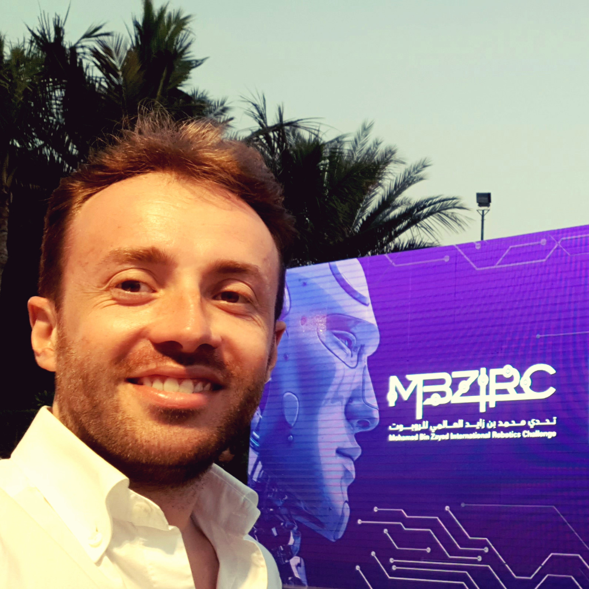

PhD Candidate

Giuseppe Sutera, a third year PhD student, carries out research in the field of robotics collaboration with the RoSys Group of the Department of Electrical, Electronic and Computer Engineering (DIEEI) of the University of Catania. The laboratory develops autonomous machines capable of autonomously navigating or copying pre-established missions, interacting with the surrounding environment through the use of only the sensors installed on the robot. The platforms used by the group are both terrestrial and aerial and often collaborate with each other, in order to increase the ability to perform a task that a single robot would not be able to complete. This has led the group to develop autonomous multi-robot platforms.
He obtained the M.Sc in Automation Engineering and Control of Complex Systems at the University of Catania in March 2018, with the following Master's thesis: « An unmanned air vehicle for radioactive waste inspection ».
Prior to this, he obtained the B.Sc in Telematic Engineering at the Kore University of Enna, in March 2014, with the following Master's thesis: « Research, design and development of an autonomous processor powerpc on board Xilinx ML507 ».
He participated in both editions of Mohamed Bin Zayed International Robotics Challenge (MBZIRC) in 2017 and 2020 respectively, finishing with his group in fourth and eighth place.
He attended in 2019 the IEEE RAS Summer School on Multi-Robot Systems at the Faculty of Electrical Engineering of the Czech Technical University
Research interests: Robotics, UAV, 3D-Print, AutoCad